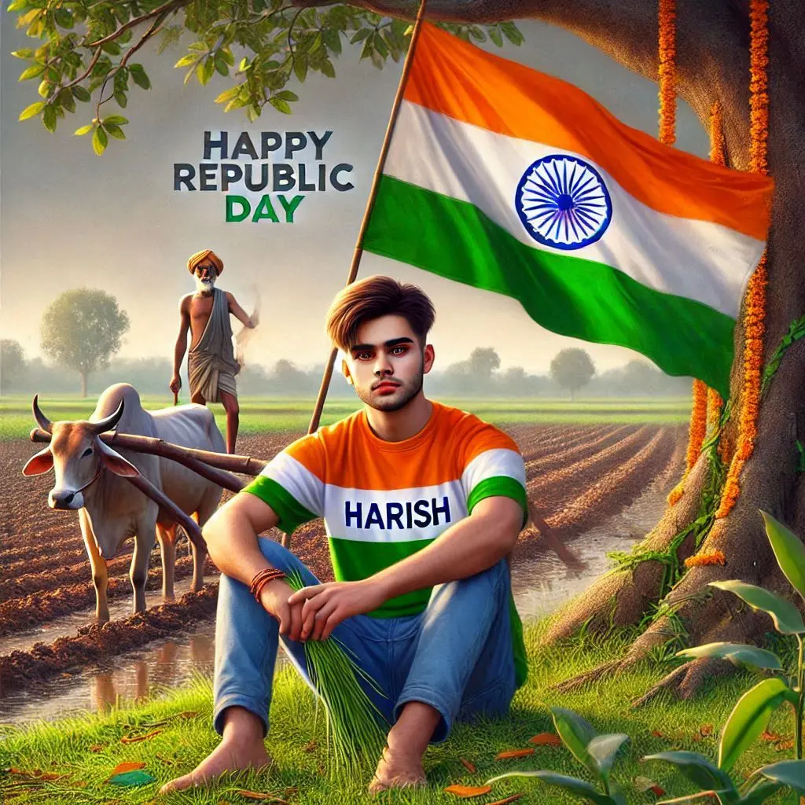
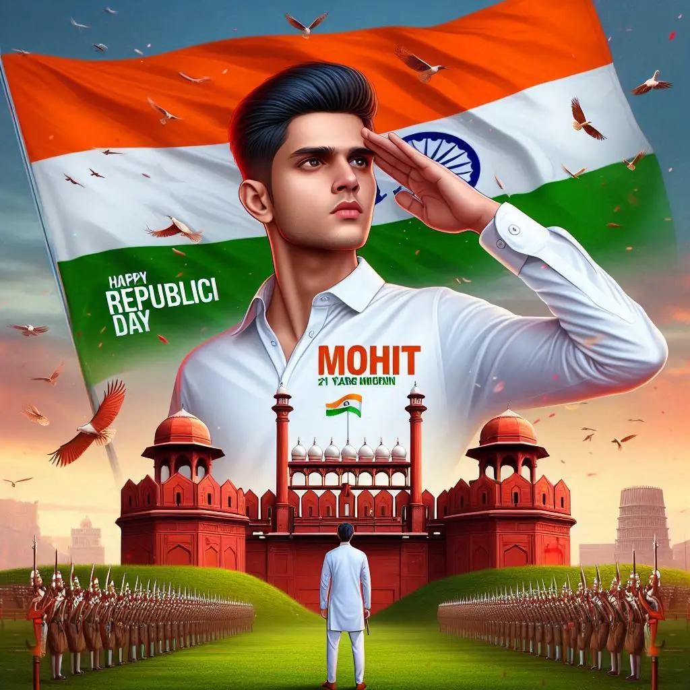
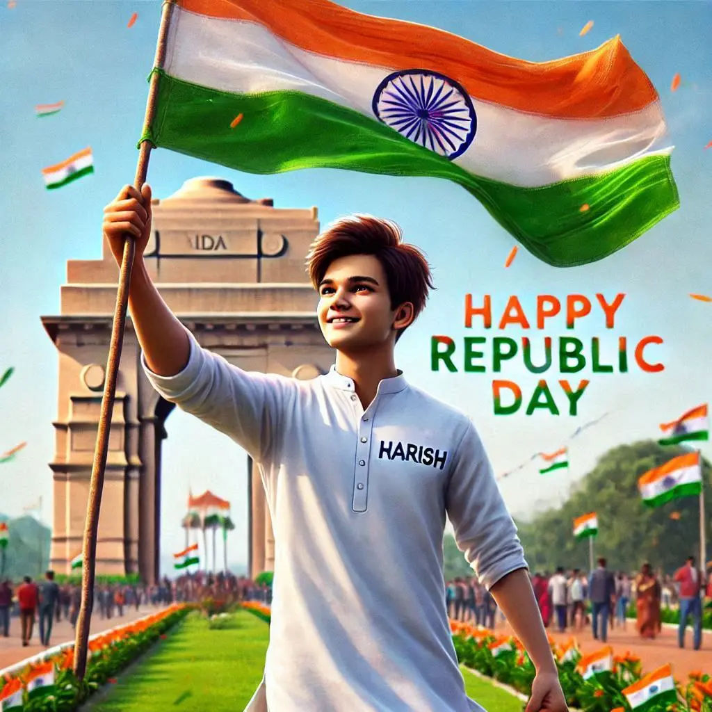

Jai Hind Friends. One of the most special and memorable days for India is 26th January 1950 because on this day India officially became a republic and our Constitution came into effect.
Every 26th January, the entire nation – from schools and institutions to government offices and citizens – celebrates Republic Day with great pride and patriotic spirit.
Want more awesome prompts?
Join our community and get the latest viral prompts daily.
Follow on Instagram
? AI PROMPT
Ultra Realistic Image where an 18 year old boy sitting under a tree in a field, holding the Indian flag. He is wearing a tricolor T-shirt with the name "Salman Khan" written on it and the Ashoka Chakra in the center of the design. Behind him, there is a farmer standing on a plowed field with an ox, also 'Happy Republic Day' clearly Written in the background, symbolizing rural India.make sure flag should not be at surface .

? AI PROMPT
Create a 3D image of 21 years old boy is wearing White color shirt and saluting to indian flag and behind him red fort placed and hoisting flag on that ,written"Happy Republic Day" on the sky and "Mohit" is written on his shirt with bold letters and also in overall image has the divine background like indian republic day.

? AI PROMPT
An 18 year old indian boy celebrating Republic Day at India Gate, New Delhi. He is wearing a crisp white kurta with 'Salman Khan' clearly written on it. He is hoisting the Indian flag proudly with both hands, surrounded by a vibrant, festive atmosphere. The sky is clear with 'Happy Republic Day' written in colorful letters. The scene is realistic with high resolution, showing the grand architecture of India Gate,lush greenery, and people in the background celebrating
? AI PROMPT
18 Year indian boy sitting on stone in Himalayan snowfield, wearing a tricolor jacket (orange, white, green) and army pants with ‘Raj’ written on it and he is looking so cute, stylish hair, smiles. In the background a Indian flag and tricolour rocket smoke in the sky and the images Picturesque, vibrant, high quality, snow fall

? AI PROMPT
An artistic digital painting of a person saluting the Indian national flag during Republic Day celebrations. The person is wearing a tricolor jersey with the name 'Vivek' and the number '26' printed on the back, representing January 26th. The jersey incorporates the Indian flag's colors: saffron, white, and green, with intricate detailing. The background features the Indian national flag waving proudly against a bright sky with soft clouds, evoking a sense of patriotism

? AI PROMPT
Create a 3D image of 18 year old indian beautiful girl is wearing White color shirt and saluting to indian flag and behind her red fort placed and hoisting flag on that ,written "Happy Republic Day" on the sky and "Kajal" is written on her shirt with bold letters and also in overall image has the divine background like indian republic day.

? AI PROMPT
18 year old indian beautiful girl celebrating Republic Day at India Gate, New Delhi. She is wearing a kurti with Priya clearly written on it. she is hoisting the Indian flag proudly with both hands, surrounded by a vibrant, festive atmosphere. The sky is clear with 'Happy Republic Day' written in colorful letters. The scene is realistic with high resolution, showing the grand architecture of India Gate,lush greenery, and people in the background celebrating

? AI PROMPT
18 year old indian Smart girl stands in beautiful ground, holding the large Indian national flag aloft. she is wears flag colour Shirt with name “Neha” is clearly written in black bold letter on Shirt, and a watch. the girl is looking so beutiful, indian, smiling, stylish hair, The background features is lal killa, in full blurred, a large indian flag stands in background, full hd quality picture. beautiful flowers around her

? AI PROMPT
18 year old indian Smart girl and boy stands in beautiful ground, both holding the large Indian national flag aloft. girl is wears flag colour Shirt with name “Neha” and boy with name "Suraj "is clearly written in black bold letter on thier Shirt, and a watch.both are looking so beutiful, indian, smiling, stylish hair, The background features is lal killa, in full blurred, a large indian flag stands in background, full hd quality picture. beautiful flowers around her

? AI PROMPT
Create a vibrant and colorful 3D-rendered scene featuring the letter 'R' designed in the style of the Indian flag. The top of the 'R' should have saffron, the middle white with the Ashoka Chakra in blue, and the bottom green. Place the letter in a picturesque landscape during sunrise or sunset, with lush greenery, mountains, and a serene sky in the background. Include the Indian national flag on a pole to the right of the 'R' and birds flying in the sky for added depth.
Steop To Create Independence Day AI Image
New Prompts : Independence Day Photo Editing Prompts
If you want to create image and want to learn Image editing check our article on how to create images from Bing Image Creator.
- First Copy any prompt from the above given prompts.
- After that Click on the below Button (Bing Image Creator)
- You will redirected to Bing AI Creator
- Sign Up or Sign In on Bing Image Creator
- Paste that Prompt in the prompt box
- Click on the “Create” button
- Now “Download” image.